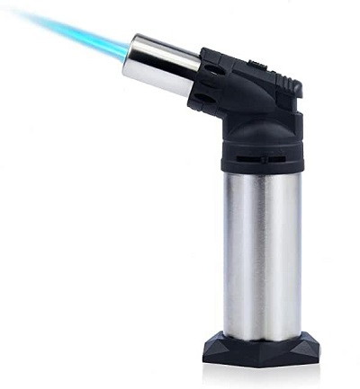

Jewelry and Enameling
Beginners Enameling: The 9th Art of Jewelry Making
Author: Ladele Simi
14th July, 2025

What Is Enameling in Jewelry Making?
Enameling is the process of fusing powdered glass to metal using intense heat, creating a glossy, colorful surface. It transforms simple pieces of metal into miniature works of art with vibrant, durable finishes. Why It's Called the 9th Art: Historically, enameling is referred to as the 9th art because it's where metalwork meets painting using fire as a brush and glass as pigment.

Types of Enameling for Beginners
There are several enameling techniques, but beginners typically start with the two most accessible:
1 . Torch-Fired Enameling:
- Uses a handheld torch instead of a kiln
- Ideal for small jewelry projects - Affordable setup for beginners
2 . Kiln-Fired Enameling:
- Uses a small tabletop kiln
- Offers more precise and consistent results
- Best for batch projects or advanced detail work

Tools and Materials You'll Need
Getting started with enameling doesn’t have to be expensive. Here's what you need:
Basic Enameling Starter Kit:
- Copper blanks
- Enamel powders
- Torch or kiln
- Mesh firing screen
- Sifter or small spoon
- Safety gear
- Enameling adhesive
- Tweezers, spatula, or firing fork

Step-by-Step: Your First Enamel Jewelry Piece
1 . Clean the Metal
- Scrub your copper blank and dry it completely.
2 . Apply Enamel Powder
- Sift a thin, even layer of enamel over the surface.
3 . Fire It Up
- Heat the piece until the enamel melts and fuses.
4 . Cool and Inspect
- Let the piece cool naturally.
5 . Finish and Assemble
- Add a jump ring and chain.

Common Enameling Mistakes (and How to Avoid Them)
Uneven enamel application: Use a fine mesh sifter.
Cracks or chipping: Avoid sudden cooling.
Burnt enamel: Don't over fire.
Enamel not sticking: Clean metal thoroughly.
Creative Inspiration: What Can You Make with Enamel?
- Minimalist pendants, Statement earrings, Enamel pins or brooches, Colorful key chains, Charm bracelets
Final Thoughts: Why Enameling Deserves a Spot in Your Jewelry Journey
Enameling is more than just adding color it’s a fusion of science and art that gives your jewelry a voice.